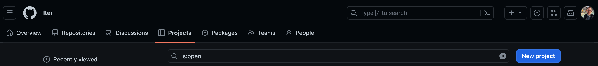
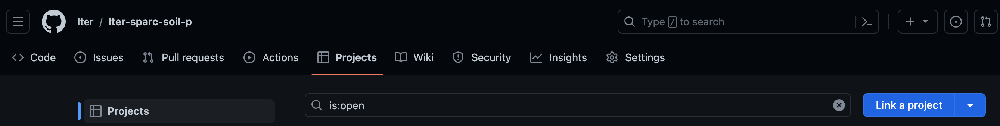
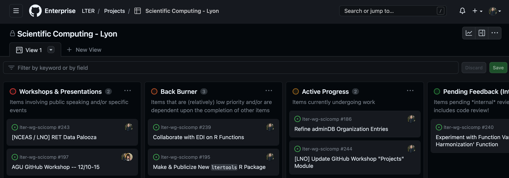
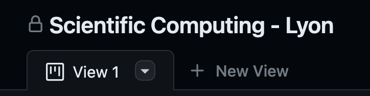
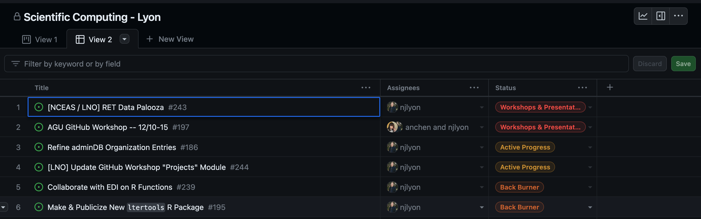
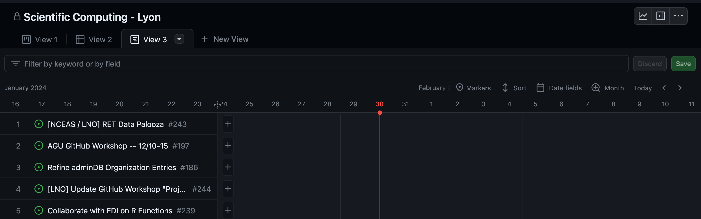
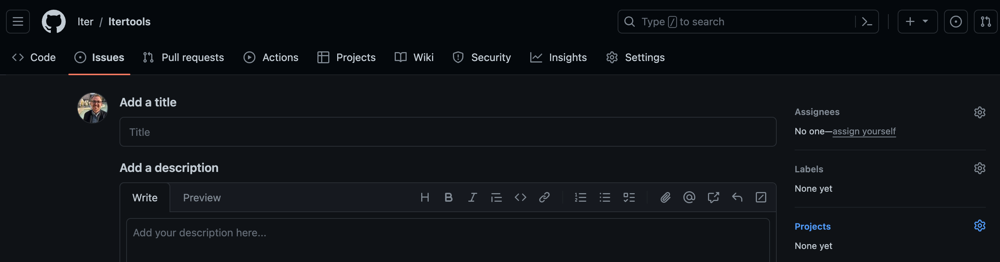
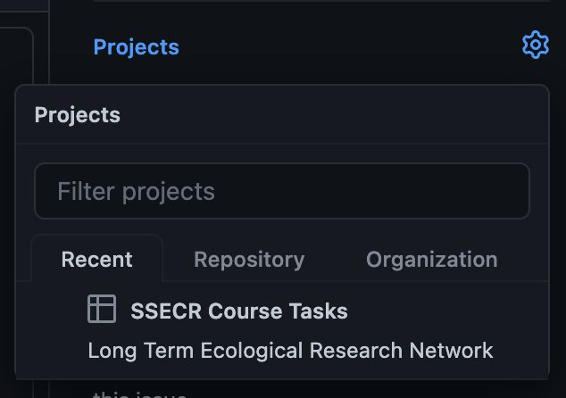
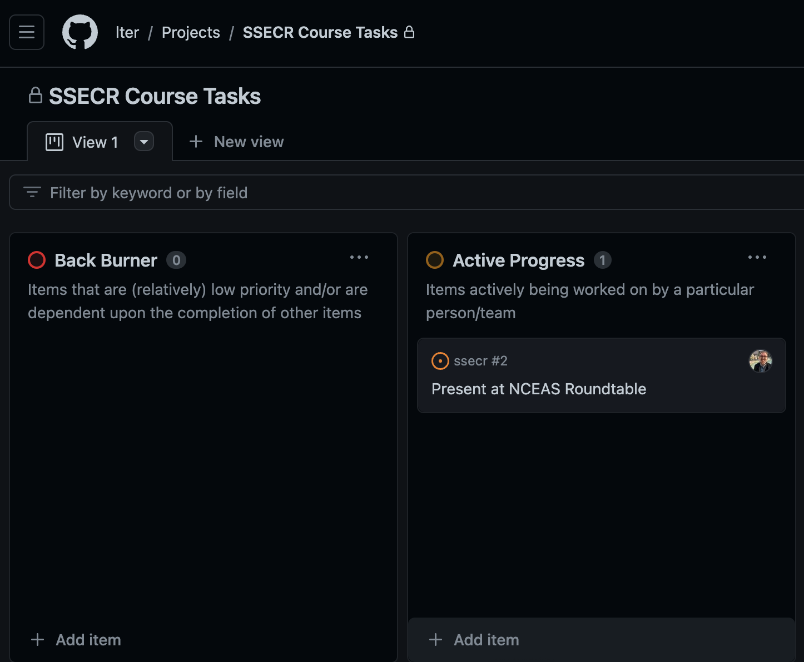

GitHub Projects
Module Learning Objectives
By the end of this module, you will be able to:
- Define a project in the context of GitHub
- Identify the three available project view options
- Explain how issues can get added to projects
What is a Project?
Projects are GitHub’s primary strategic project management tool. While issues can be very useful for particular tasks, they are less valuable for making larger-scale plans and tracking evolving priorities. A project acts as an umbrella that includes many issues and tracks their inter-relationships and where they fit in a bigger-picture view of a project.
Project Ownership
Projects can only be created for a particular User or an Organization. In either case, any number of users can be allowed access to the project. The list of all projects owned by an Organization/User can be accessed via the “projects” tab. Note that this tab’s name is consistent for Users and Organizations; Organizations just have more tabs to support the expanded set of tools available to them. Note that in the screenshot below we are in an organization (“lter”) not a specific repository.

Once a project has been created, it can be “linked” to any number of repositories owned by that entity. This can be done from the “Projects” tab of each repository to which linking is desired. Note in the top left of the screenshot below that we are in a repository (“lter-sparc-soil-p”).

Using Projects
Within the team that created this workshop, we use GitHub Issues to track and document each task that we do for a working group. We then use a GitHub project to let each team member track all of their Issues and ensure that we rotate through which group we are helping. This guarantees equitable effort for each working group and allows each team member to balance all of the tasks on their docket at any given moment.
See below for a screenshot of what such a project looks like for one team member.

When using a project you can add or remove the columns (the above example has four columns) and individual issue “cards” can be clicked and dragged among columns. You can also automate a column so that Issues that meet certain criteria are automatically moved to a particular column (e.g., Issues added to this project are automatically moved to the “Done” column).
Project “Views”
GitHub supports three different view options within projects. You can have as many views as you’d like, including duplicates of the same category of view. Views can be created or toggled between in the top left of the screen, just beneath the project title.

Accepted project view options are “Board”, “Table”, and “Roadmap.” We will highlight the major features of each view below but note that in all included screen captures the actual issues in the project are the same! Picking a view option is essentially only a user interface change, not a fundamental change to how tasks are managed by or added to a given project (more on that later!).
Board View
The first view option (and in our opinion the best for working groups) is the “board” option. In this view, issues are tracked in vertical columns and can be dragged among columns at will. Columns are often used to denote issue status such that columns further to the right are closer to finished. Column names, colors, and description text can all be edited to fit your team’s needs.
Table View
The second view option is the ‘table’ option. This view stacks all current tasks vertically and automatically sorts them by the task status (equivalent to the columns in the board view). If your team typically uses an MS Excel / Google Sheet file to track your ongoing work, this project view would represent the closest user interface match.

Roadmap View
The final view option is the ‘roadmap’. This view allows for tracking of issues through time more explicitly than the other two view options. You can choose the temporal specificity that makes most sense for your work (allowed options include daily, monthly, quarterly, and yearly breakdowns). Tasks then show up as a long bar in their row extending from whatever their start date is to the user-defined end date. Note that for this view to work you will need to add specific start/end dates to every issue.

Integrating Issues
Once you’ve created the project(s) you want, issues can be added to them as desired! You can either add issues at the Issue creation stage or from the project itself after the Issue has been created.
Adding from an Issue
When you first create an issue you can add it to one or more projects by clicking the gear icon in the sidebar of options on the right side of the screen.

Upon clicking that icon, a small window will pop up and will allow you to choose any project (A) you’ve interacted with recently, (B) that is linked to this particular repository, and/or (C) that is owned by the Organization/User that owns the repository. If there are many projects that meet these criteria there is also a handy search bar that lets you search through for a specific project by name.

Adding from a Project
If you’d prefer, you can add existing issues to a project from the project’s home screen. Once in the project, click the “Add item” button at the bottom of the screen and begin typing the name of the issue. Clicking an issue’s name will then automatically add it to the project and will allow you to “triage” it (i.e., add the issue to the column indicating its current status).

Maximizing Project Utility
It may go without saying, but projects are at their most valuable as project management tools when you make effective use of GitHub Issues. Specifically, the three Issue capabilities that will benefit your adoption of projects are as follows:
- Giving Issues clear and short titles
- “Assigning” Issues to particular users
- Using labels to group Issues into useful categories
If your team is considering these three points, then adopting GitHub projects will further empower your ability to track your internal tasks over time. Feel free to consult our page on Issues for more information!